Primer arranque «¿Qué tienes hoy?» arranque
| Campo | Valor (fuente) |
|---|---|
| Tipo · Estado · Versión | product-application · candidate 0.2.0 · owner lima (registry) |
| Ronda de origen | lab/arranque/r01 |
| Código | apps/web/src/modules/arranque/{routes.ts, api.ts, components/TarjetaRecipiente.vue, pages/ArranquePage.vue} · reutiliza modules/configuracion/components/RecursoCapa.vue |
| Ruta | /e/:slug/arranque (shell, destino inicio) — desde Inicio «Empezar» (sin lotes) y desde Recursos «Registrar lo que hay» |
| Pruebas | modules/arranque/__tests__/arranque.test.ts · qa/evidencia-arranque.mjs |
| Evidencia | qa/evidence/arranque-r01/* |
Propósito
Que el dueño, el día uno, diga qué hay en cada tanque, tina y colector (o lo marque vacío) para que el sistema arranque con la realidad del palenque (§13.2 #2).
Preview (capturas)
Evidencia real de qa/evidence/arranque-r01/, 1440 / 1024 / 768 / 390 × claro / oscuro.
arranque

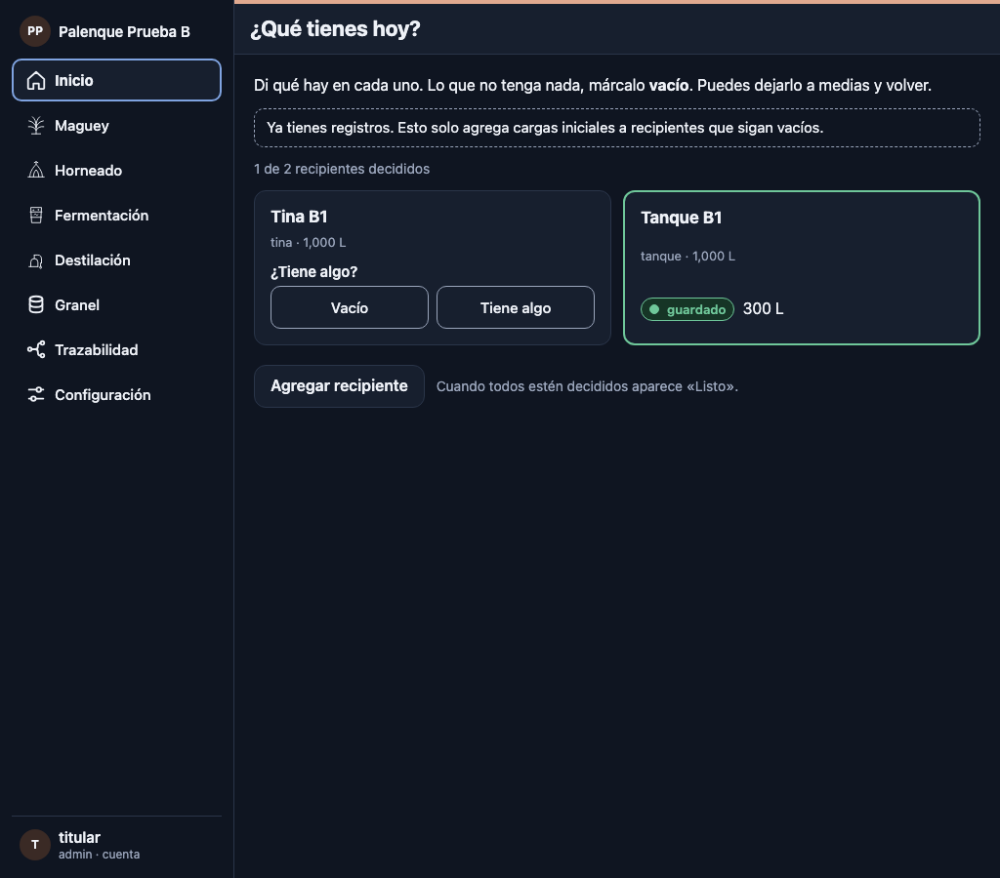

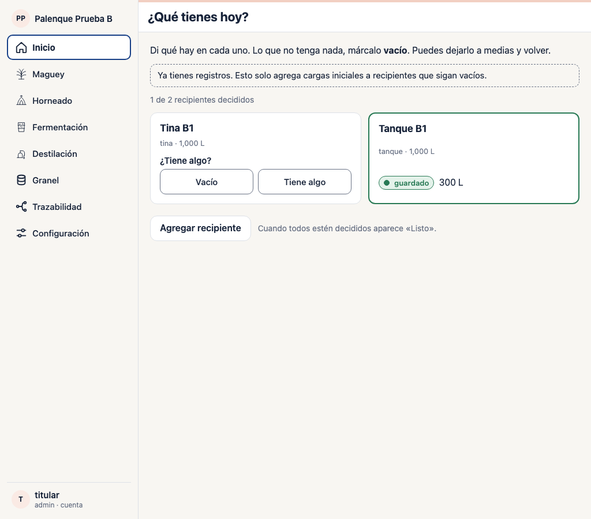

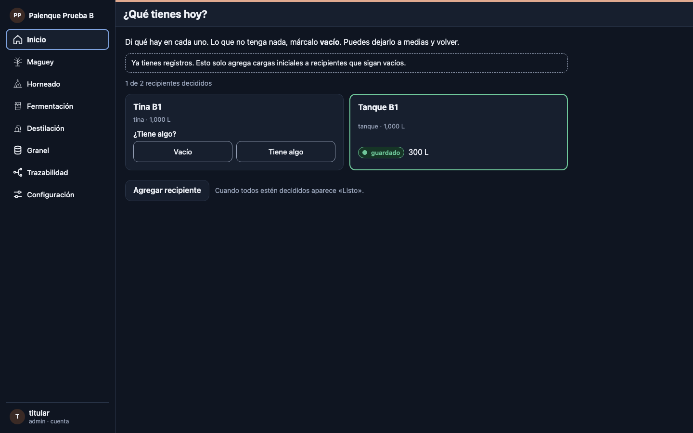

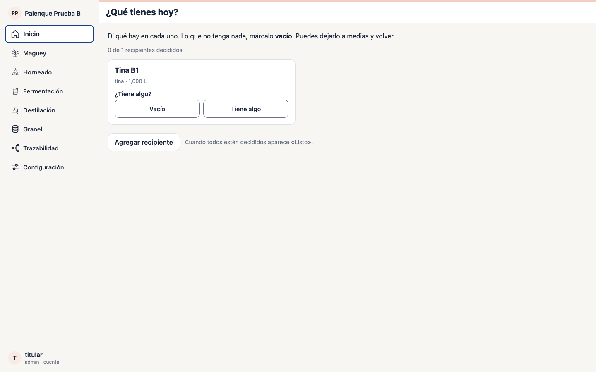

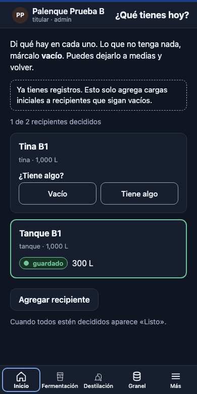

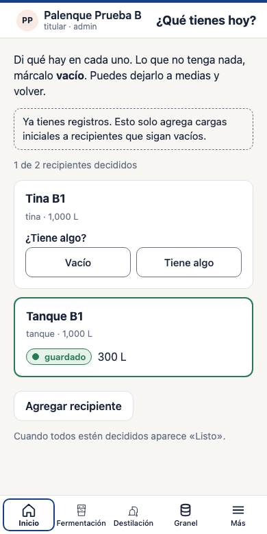

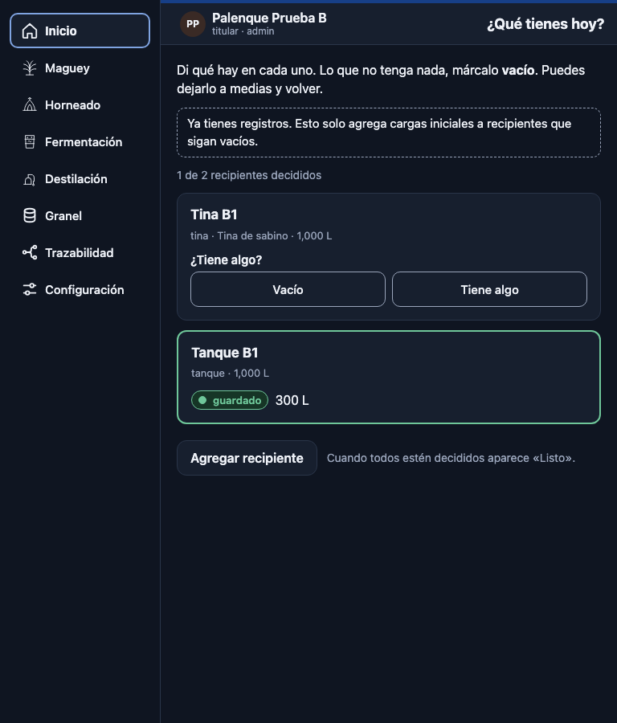

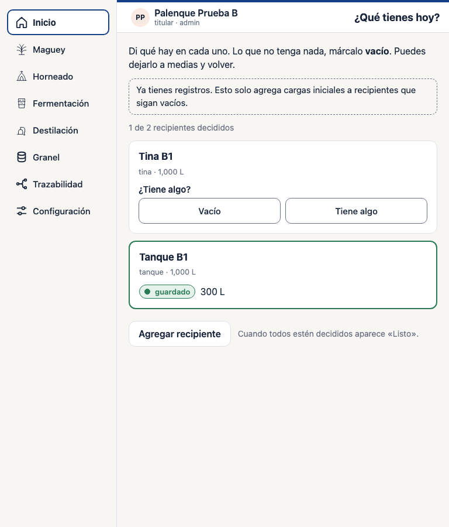

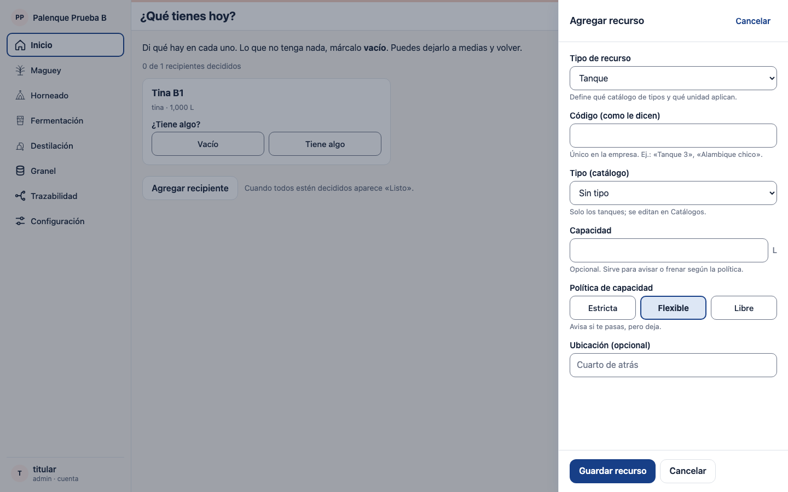

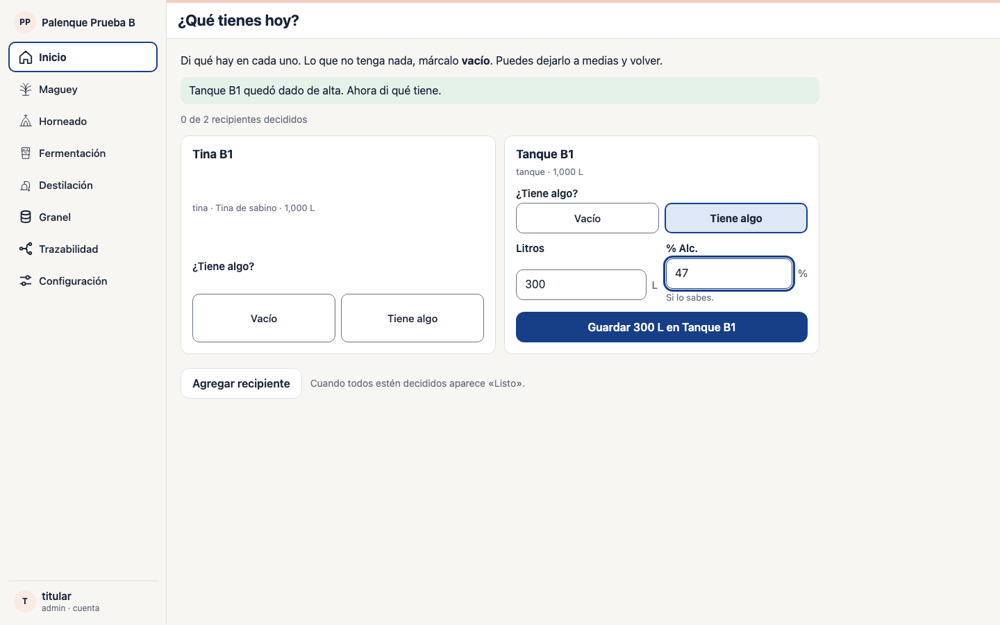

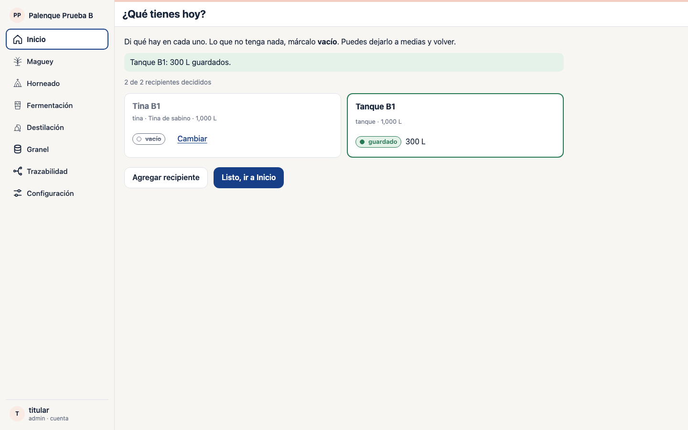
arranque-agregar
arranque-datos
arranque-listo
inicio-con-lotes

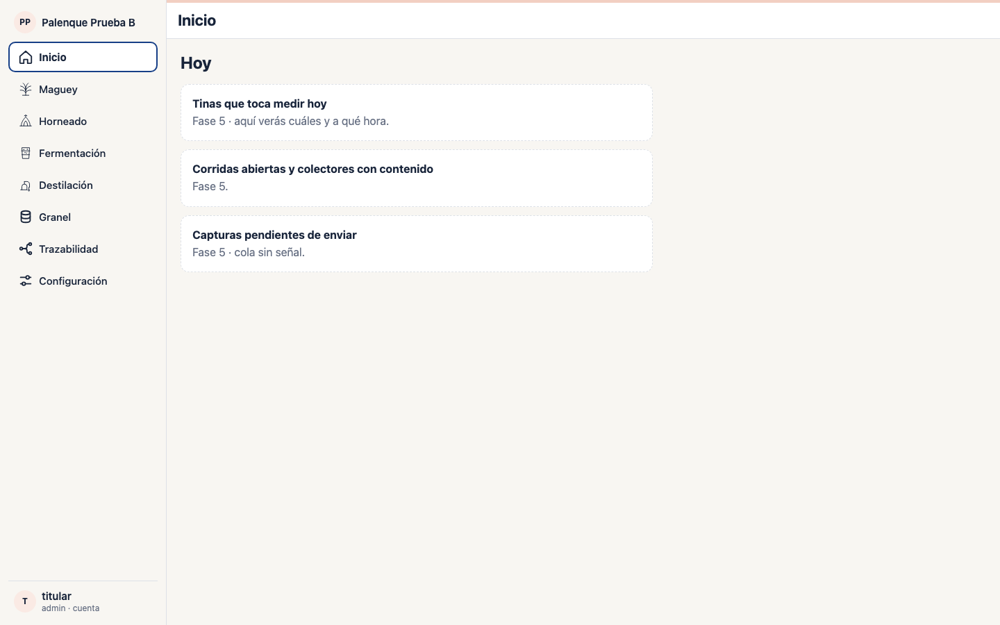
inicio-sin-lotes

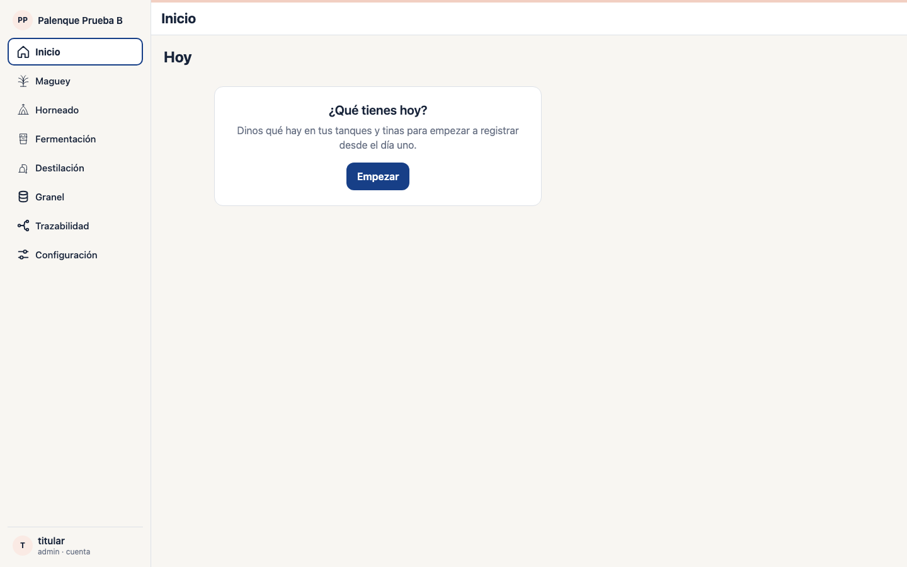
Cómo funciona
Una lista de tarjetas, una por recipiente activo (tanque, tina, colector; hornos, molinos y alambiques no guardan líquido). Cada tarjeta: «Vacío» · «Tiene algo» → Litros (+ % Alc. en tanque y colector) → «Guardar 300 L en Tanque B1» → colapsa como guardado (litros y, en tina, «ciclo abierto»). Progreso «n de t recipientes decididos»; «Agregar recipiente» abre la misma capa de Recursos; «Listo, ir a Inicio» aparece cuando todos están decididos.
- Guardar llama a
registrar_entrada(…, 'carga_inicial')con material por tipo (tanque → granel; tina → fermentado, abre un ciclo sin formulación; colector → destilado con su clase) y unaidempotency_keypor tarjeta guardada enlocalStorage pulz:arranque:<org>: reintentar no duplica. - «Vacío» es local (no existe en la base). Lo real — guardado — se deriva de
recurso_en_uso(saldo > 0 o ciclo abierto), así que al volver desde otro navegador lo guardado sigue guardado. - Guardar es irreversible aquí; los litros se corrigen en Granel (Fase
- con un ajuste.
Estados
Carga (esqueleto) · sin recipientes («Agregar recipiente» como primaria) ·
pendiente / con datos / guardando / guardado / vacío · aviso de capacidad
(estricta: no se podrá; flexible: se guarda con aviso) · error bajo la
tarjeta (CAPACIDAD:, tina con ciclo abierto → pasa a guardada, red) · ya
arrancó («Ya tienes registros…») · sin permiso (operador) · sin conexión
(se escribe, no se guarda) · solo lectura.
Componentes usados
app-shell · state-block · button · number-field · segmented-choice
· status-chip · task-layer (vía RecursoCapa) · banner.
Criterios verificados
Con la dueña de Prueba B (escrituras reales): Inicio sin lotes → Empezar; Tanque B1 creado; 300 L @ 47 guardados; Tina B1 vacía; «2 de 2»; Listo; recarga conserva el estado; Inicio pasa a «Hoy»; las corridas siguientes muestran «Ya tienes registros» con Tanque B1 guardado desde la base. 4 anchos × 2 temas, sin desborde.
No verificado
Aviso del servidor con política flexible (rpc_warn); colector real; lector
de pantalla; zoom nativo.
Facetas de QA (registry)
| Faceta | Nivel de evidencia |
|---|---|
| visual | screenshots-reviewed |
| viewports | runtime-verified |
| keyboard | runtime-verified |
| touch | runtime-verified-emulated |
| zoom200 | runtime-verified-approx · root font-size 200 % (qa/zoom-acceso.mjs) |
| contrast | passed-with-reviewed-findings |
| longText | static-reviewed |
| states | runtime-verified |
Candidate: sí · Stable: no